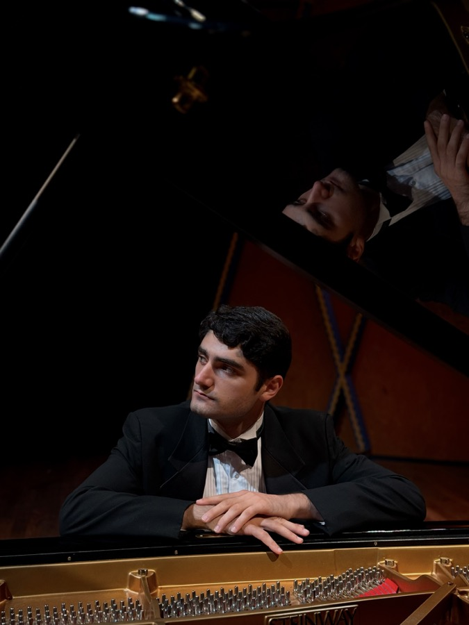

Pianist • Composer • Singer
Martin
Shahbazyan
Award-winning concert pianist and composer, performing at concert halls across Armenia, Europe, and the Americas. Classically trained and deeply rooted in Armenian musical heritage, with a parallel voice in Alt/Prog music.
Performances
Jacob Collier's Hideaway
Participant
Solo Recital
Sala dei Notari
Recital with Perugia Festival Orchestra
Chiesa di Santo Spirito
Performances — Las Colinas Symphony Orchestra
Season engagements
Harpsichord Performances
Baroque ensemble
'Petrushka' — Dallas Black Dance Theatre
Bass Hall, Fort Worth Symphony Orchestra
Charity-Concert of Gratitude
Aram Khachaturian Concert Hall — Duo performance
Commemoration Night Concert at Tsitsernakaberd
Self-composed piece
'Armenia in Rock' Rock Festival
Opera Square (Freedom Square), Yerevan — Band performance of self-composed songs
Solo Recital in Finland
Sigyn Hall, Turku, Finland
9th Armenian Composers' Art Festival
Participant
'Haro Stepanyan' Festival
World premiere of Haro Stepanyan's piano preludes
'Hovnan' Theatrical Performance
Original score composer
Fête de la Musique
France Square, Yerevan — Band performance of self-composed songs
'TUMOrchestra' Band
Member
'Creation Formula'
Documentary about Arno Babajanian — Participant
Awards
Piano Campus
Piano Campus de Bronze
"VILLAHERMOSA" International Piano Competition
1st Prize
TMC Young Artist Competition
3rd Prize
Franz Liszt Center International Piano Competition
1st Prize
47th Annual Pi Kappa Lambda Honors
1st Prize
MTNA Houston, TX
Alternate
1st 'Harmonium' OnlinePlus International Competition
Grand Prix
YSC Chamber Music Competition
1st Prize
VI Heghine Ter-Ghevondyan Competition
1st Prize & 5 Special Prizes
IV Arno Babajanyan International Competition
1st Prize & Special Prize for best performance of Babajanyan's work
VI Tbilisi International Young Pianists' Contest
3rd Prize
'You Are Our Pride' International Competition
1st Prize
'Open Europe – Open Planet' Moscow International Contest
3rd Prize
'VII G. Sarajev' Piano Competition
2nd Prize
Education
Texas Christian University
Master of Music & Artist Diploma, Piano
Fort Worth, Texas, USA
Texas Christian University
Bachelor of Arts, Piano
Fort Worth, Texas, USA
Komitas State Conservatory of Yerevan
Piano Studies
Yerevan, Armenia
Turku University of Applied Sciences
Faculty of Education & Social Services — Piano
Turku, Finland
Teaching & Experience
School of Rock
Piano Instructor
Dec 2025 – May 2026
Fort-Worth Country Day
Piano Teacher
Aug 2023 – May 2026
Texas Christian University
Piano Accompanist
Aug 2021 – May 2026
DASA2
Piano Tutor
Apr 2021 – Present
Sayat-Nova Music School
Piano Accompanist
Sep 2019 – Jun 2021
Contact
For bookings, collaborations, and inquiries, please reach out directly.
shahbazyan.martin@gmail.comOnline